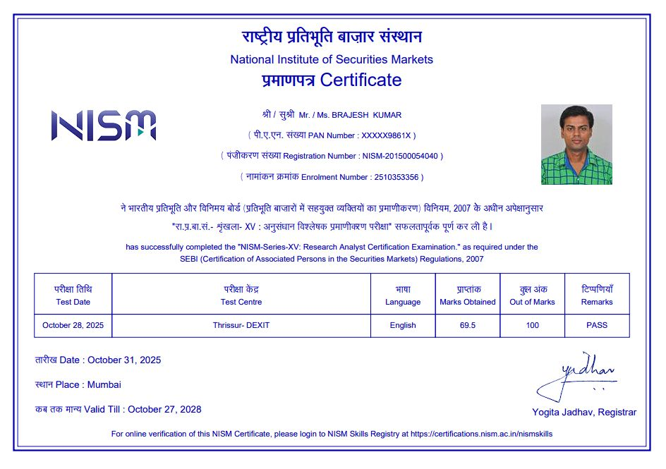
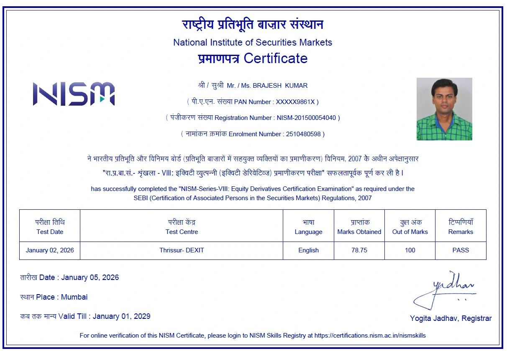

About ChartRobo
ChartRobo is an educational initiative founded by Brajesh Kumar — an NISM Certified Research Analyst with professional experience across finance, banking, and technology. The mission is to simplify technical analysis and market psychology into structured, logical frameworks that any learner can understand.
Meet The Founder :
 
Brajesh Kumar — NISM Certified Research Analyst & Ex-Banker (Bank of Baroda)
With extensive experience across banking, technology, and financial markets, Brajesh founded ChartRobo to simplify trading education.
His goal is to help traders focus on structure and disciplined analysis through historical data & price action with intuitive tools and real-market insights.
Our Vision
The modern market rewards discipline, structure, and logic — not emotion. ChartRobo aims to help individuals develop a robotic mindset while interpreting charts, focusing purely on data and structure rather than impulses or tips.
Our Journey
ChartRobo was conceptualized to bridge the gap between theory and practice in trading education. Through years of observation and research, we designed two mathematical, data-based learning tools — ChartRobo Seasonal Trend Analyzer (TradeRadar) and ChartRobo Potential Reversal Finder (WaveX) — both used purely for educational visualization.
Our Philosophy
Markets are driven by crowd psychology and repeatable structures. By combining psychological awareness with mathematical logic, ChartRobo helps learners understand price behavior objectively and eliminate emotional bias. We believe every trader should learn to “think like a robot, act like a professional.”
What We Offer
- ChartRobo Basic Workshop: Foundational program on psychology, structure, and analytical process.
- ChartRobo Mentorship Program: Ongoing live discussions, feedback, and learning reinforcement.
Both programs are purely educational and designed to improve understanding of charts, not to provide investment advice or stock recommendations.
Disclaimer
ChartRobo is an educational and informational platform and is not a SEBI-registered investment advisory entity. We do not provide stock recommendations, trading signals, investment advice, or guaranteed returns of any kind. All workshops, sessions, discussions, and materials offered by ChartRobo are conducted purely for educational and learning purposes to enhance understanding of market behavior and analysis techniques. Participation in any ChartRobo program does not guarantee profits or performance outcomes, and the use of any learning tools or demonstrations is solely for educational illustration. Financial market participation involves risk, including potential loss of capital. Past performance does not guarantee future results. ChartRobo, its founder, and team members are not SEBI-registered investment advisers or research analysts. Learners and participants are strongly advised to perform their own due diligence and consult a SEBI-registered investment adviser before making any trading or investment decisions.